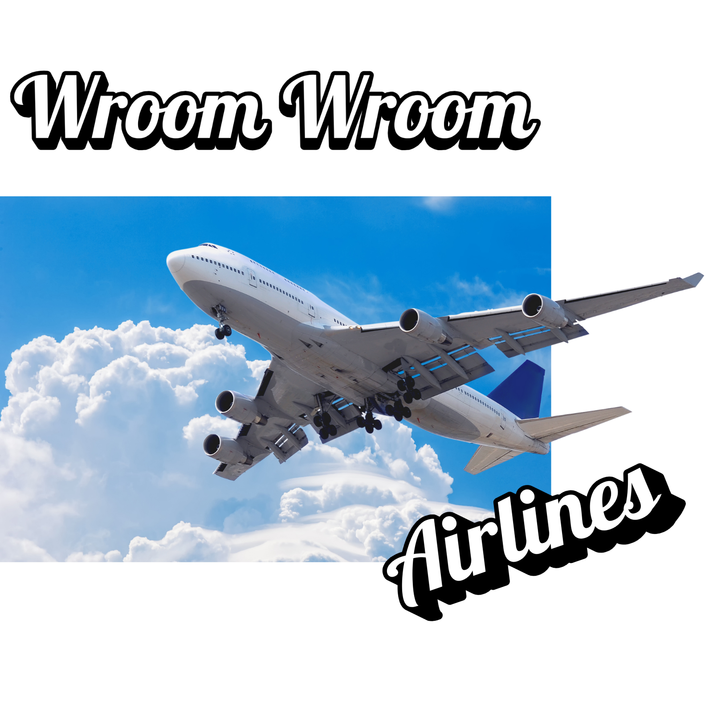

En Wroom-Wroom Airlines, transformamos la manera de volar. No solo llevamos personas de un lugar a otro: creamos experiencias diseñadas para el confort, la eficiencia y el detalle. Nuestra flota moderna, el servicio personalizado y la excelencia gastronómica hacen de cada vuelo algo más que un traslado: lo convierten en un placer. Ya sea por negocios o por placer, volar con nosotros es sinónimo de tranquilidad, cuidado y elegancia. |
|||
Elegir Wroom-Wroom es elegir:
|
 | ||